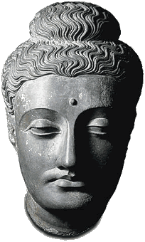

Head of Buddha statueThis is a sculpture of the Buddha from Gandhara, made in about the second century A.D. 
The Buddha lived in the sixth century B.C. and had many followers by the time he died. He believed that his teachings were more important than him and he did not want to be seen as a god. Thus, he was represented by symbols rather than as a human in early Buddhist sculptures. By the first century B.C., styles had changed and the Buddha was represented as a human in sculptures. In the first century A.D. an artistic style developed in the region of Gandhara (in modern Afghanistan and Pakistan) which combined Indian, Greek and Asian styles. This sculpture showing the head of the Buddha is a fine example of the Gandharan style. |